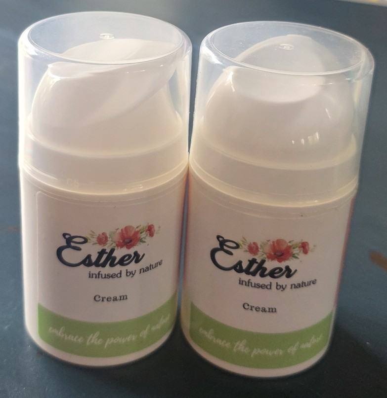

Ontdek de Kracht van Vires-5 Zalf
Vires-5 zalf is een uniek product dat de voordelen van ons geïoniseerde water combineert met natuurlijke ingrediënten om een effectieve verzorging voor de huid te bieden. Deze zalf is ontworpen om de huid te hydrateren, te beschermen en te herstellen, terwijl het tegelijkertijd profiteert van de antioxidante eigenschappen van ons water met een redoxwaarde van -700 mV.
Ingrediënten en Toepassingen
Onze zalf bevat zorgvuldig geselecteerde natuurlijke ingrediënten die samenwerken met het geïoniseerde water om een breed scala aan huidproblemen aan te pakken. Of je nu last hebt van droge huid, irritaties of kleine wondjes, Vires-5 zalf biedt een zachte maar effectieve oplossing.
Waarom Kiezen voor Vires-5 Zalf?
De combinatie van geïoniseerd water en natuurlijke ingrediënten maakt Vires-5 zalf tot een krachtig hulpmiddel voor huidverzorging. De antioxidanten in het water helpen vrije radicalen te neutraliseren, wat kan bijdragen aan een gezondere en stralendere huid.